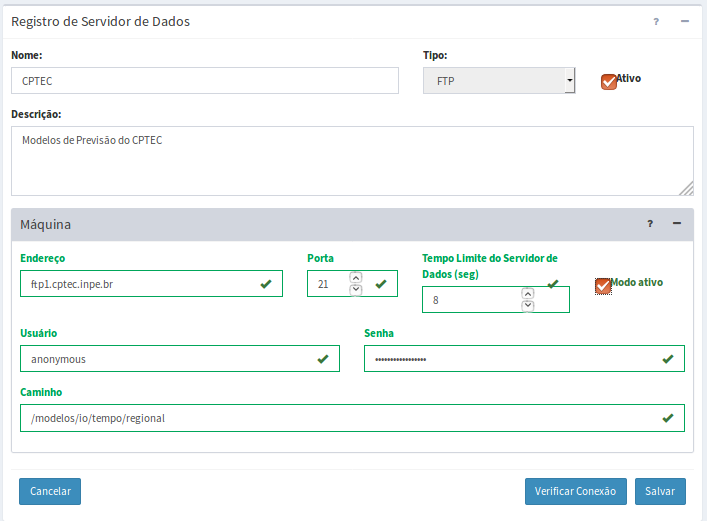

Adicionar Servidor de Dados
Para adicionar um novo servidor de dados é necessário ter um projeto ativo. No menu de opções selecione “Servidores de Dados” para que a lista de servidores disponíveis seja apresentada na área de trabalho. Clique no botão “ + ” para adicionar novo servidor. Utilize o botão “Salvar” para salvar o servidor. Botão “Verificar Conexão” verifica se os parâmetros preenchidos estão corretos. Não é permitido nomes de servidores em duplicidade. Botão “Cancelar” volta à tela anterior sem salvar o servidor. A Figura 2.11 mostra a área de trabalho para adicionar novo servidor. Detalhes de cada campo a seguir.

Figura 2.11 – Módulo de Administração: Registro de servidor de dados.
Registro de Servidor de Dados:
- Nome: Defina o nome do servidor. O tamanho máximo do nome é de 100 caracteres.
- Tipo: Escolha o tipo entre FTP, HTTP, HTTPS, ARQUIVO e POSTGIS. Dependendo do tipo escolhido alguns parâmetros específicos serão apresentados para preenchimento.
- Ativo: Botão ativo permite coletar dados dinâmicos associados ao servidor e inativo nenhuma coleta será realizada. Este botão não é aplicado para servidores que estarão armazenando (ou recebendo) dados.
- Descrição: Campo não obrigatório para descrição do servidor. O tamanho máximo da senha é de 250 caracteres.
Registro de Servidor de Dados – Máquina: (se tipo FTP)
- Endereço: Nome de endereço de FTP (File Transfer Protocol) da máquina remota normalmente utilizada para coletar dados ambientais. O tamanho máximo do endereço é de 250 caracteres. Exemplo: ftp1.cptec.inpe.br ou 150.163.133.245.
- Porta: Porta do servidor FTP. Normalmente utilizada a porta 21.
- Tempo Limite do Servidor de Dados (seg): Tempo limite para encontrar o servidor. O valor padrão é de 8 segundo, mas se necessário mais tempo para encontrar um servidor devido o tráfego na rede, aumente este valor.
- Modo Ativo: O protocolo de transferência de arquivos pode operar de modo Ativo ou Passivo. Ambas as formas usam dois canais de comunicação cliente-servidor, sendo eles canal de comandos e canal de dados, tendo uma conexão TCP para cada. O canal de comandos é usado apenas para o envio e resposta de comandos, sendo o canal de dados utilizado para a transferência dos arquivos em si. Essa separação é feita para que o cliente possa se comunicar (enviar comandos) ao servidor sem a necessidade de aguardar o término da transmissão em execução. O modo ativo fixa determinadas portas a serem usadas nas conexões de dados e comandos, o que pode vir a causar erros caso o servidor possua um Firewall instalado (que pode vir a bloquear tais portas). Já no FTP Passivo, é definido pelo SysAdmin o range de portas (2000:7000, por exemplo), nas configurações do serviço FTP, em que essas conexões serão estabelecidas, sendo definidas aleatoriamente durante o processo.
- Usuário: Nome de usuário do servidor FTP deve ser informado.
- Senha: Senha de usuário do servidor FTP deve ser informado.
- Caminho: Diretório base a partir do ponto de conexão com o servidor de FTP. Este caminho poderá ser acrescentado de uma pasta específica para cada dado ambiental.
Registro de Servidor de Dados – Máquina: (se tipo HTTP ou HTTPS)
- Endereço: Nome de endereço de HTTP (Hypertext Transfer Protocol) ou HTTPS (Hypertext Transfer Protocol Secure) da máquina remota normalmente utilizada para coletar dados ambientais. O tamanho máximo do endereço é de 250 caracteres.
- Porta: Porta do servidor HTTP ou HTTPS. Normalmente utilizada a porta 80 para HTTP e 443 para HTTPS.
- Nome do Usuário: Nome de usuário do servidor HTTP deve ser informado.
- Senha: Senha de usuário do servidor HTTP deve ser informado.
- Caminho: Diretório base a partir do ponto de conexão com o servidor de HTTP. Este caminho poderá ser acrescentado de uma pasta específica para cada dado ambiental.
Registro de Servidor de Dados – Máquina: (se tipo ARQUIVO)
- Caminho: Diretório base a partir do sistema de arquivos locais para coletar ou armazenar dados ambientais ou estáticos. Este caminho poderá ser acrescentado de uma pasta específica para cada dado ambiental. Exemplo: C:/dados_estudo/grades .
Registro de Servidor de Dados – Máquina: (se tipo POSTGIS)
- Endereço: Nome do servidor de banco de dados PostgreSQL + PostGIS utilizado para para coletar ou armazenar dados ambientais ou estáticos. O tamanho máximo do endereço é de 250 caracteres.
- Porta: Porta do servidor PostgreSQL + PostGIS. Normalmente utilizada a porta 5432.
- Nome do Usuário: Nome de usuário do servidor PostgreSQL + PostGIS deve ser informado.
- Senha: Senha de usuário do servidor PostgreSQL + PostGIS deve ser informado.
- Base de Dados: Nome do banco de dados disponível do servidor PostgreSQL + PostGIS. O esquema padrão usado será público se não informado por qualquer tabela que venha a ser criada por uma análise por exemplo.
Created with the Personal Edition of HelpNDoc: Free EPub and documentation generator